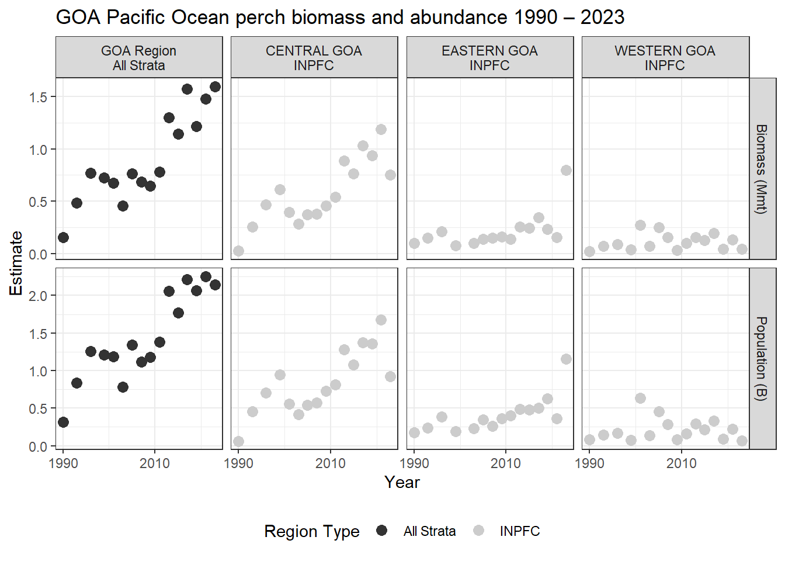

library(RODBC)
channel <- gapindex::get_connected()Access data via Oracle and R
Access data via Oracle (AFSC only)
AFSC Oracle users can access the database via SQL developer to view and pull the production data directly from the GAP_PRODUCTS Oracle schema. The user can also use SQL developer to view and pull the GAP Products data directly from the GAP_PRODUCTS Oracle schema.
7.0.1 Connect to Oracle from R
Many users will want to access the data from Oracle using R. The user will need to install the RODBC R package and ask OFIS (IT) connect R to Oracle. Then, use the following code in R to establish a connection from R to Oracle:
Here, the user can establish the oracle connection by entering their username and password in the channel <- gapindex::oracle_connect() function. Never save usernames or passwords in scripts that may be intentionally or unintentionally shared with others. If no username and password is entered in the function, pop-ups will appear on the screen asking for the username and password.
After you connect to VPN, you’ll be able to log into Oracle.
Data SQL Query Examples:
library(gapindex)
library(RODBC)
library(flextable)
library(ggplot2)
library(magrittr)
library(dplyr)7.0.2 Ex. Select all data from tables
You can download all of the tables locally using a variation of the code below. Once connected, pull and save the tables of interest into the R environment.
locations <- c(
"GAP_PRODUCTS.AKFIN_AGECOMP",
"GAP_PRODUCTS.AKFIN_AREA",
"GAP_PRODUCTS.AKFIN_BIOMASS",
"GAP_PRODUCTS.AKFIN_CATCH",
"GAP_PRODUCTS.AKFIN_CPUE",
"GAP_PRODUCTS.AKFIN_CRUISE",
"GAP_PRODUCTS.AKFIN_HAUL",
"GAP_PRODUCTS.AKFIN_LENGTH",
"GAP_PRODUCTS.AKFIN_METADATA_COLUMN",
"GAP_PRODUCTS.AKFIN_SIZECOMP",
"GAP_PRODUCTS.AKFIN_SPECIMEN",
"GAP_PRODUCTS.AKFIN_STRATUM_GROUPS",
"GAP_PRODUCTS.AKFIN_SURVEY_DESIGN",
"GAP_PRODUCTS.AKFIN_TAXONOMIC_CLASSIFICATION"
)
for (i in 1:length(locations)) {
print(locations[i])
a <- RODBC::sqlQuery(channel, paste0("SELECT * FROM ", locations[i]))
write.csv(x = a, file = here::here("data", paste0(locations[i], ".csv")))
}library(odbc)
library(RODBC)
library(dbplyr)
my_spp_codes <- c(
30010, # Sebastolobus sp. thornyhead unid.
30020, # Sebastolobus alascanus shortspine thornyhead
30025, # Sebastolobus macrochir broadfin thornyhead
30330, # Sebastes melanops black rockfish
30430, # Sebastes proriger redstripe rockfish
30470, # Sebastes ruberrimus yelloweye rockfish
30475, # Sebastes babcocki redbanded rockfish
30535, # Sebastes variegatus harlequin rockfish
30560, # Sebastes zacentrus sharpchin rockfish
30600, # Sebastes reedi yellowmouth rockfish
30030, # Sebastolobus altivelis longspine thornyhead
30040, # Sebastes sp. rockfish unid.
30100, # Sebastes brevispinis silvergray rockfish
30150, # NA dusky and dark rockfishes unid.
30152, # Sebastes variabilis dusky rockfish
30170, # Sebastes crameri darkblotched rockfish
30270) # Sebastes helvomaculatus rosethorn rockfish
a <- dplyr::tbl(channel, dplyr::sql('gap_products.akfin_biomass')) %>%
dplyr::rename_all(tolower) %>%
dplyr::select(survey_definition_id, area_id, species_code, year, biomass_mt, biomass_var) %>%
dplyr::filter(species_code %in% my_spp_codes &
area_id %in% 99904 &
year >= 1991) %>%
dplyr::collect()
flextable::flextable(head(a)) %>%
flextable::fit_to_width(max_width = 6) %>%
flextable::theme_zebra()7.0.3 Ex. CPUE for all EBS and NBS stations with associated haul, cruise, and species information.
a <- RODBC::sqlQuery(channel = channel, # NOT RACEBASE.HAUL
query = paste0(
"
-- Select columns for output data
SELECT
cr.CRUISEJOIN,
cr.CRUISE,
cr.YEAR,
cr.SURVEY_DEFINITION_ID,
cr.SURVEY_NAME,
cr.VESSEL_ID,
cr.VESSEL_NAME,
cp.HAULJOIN,
cp.SPECIES_CODE,
tt.SPECIES_NAME,
tt.COMMON_NAME,
cp.WEIGHT_KG,
cp.COUNT,
cp.AREA_SWEPT_KM2,
cp.CPUE_KGKM2,
cp.CPUE_NOKM2,
hh.HAUL,
hh.STATION
-- Identify what tables to pull data from
FROM GAP_PRODUCTS.AKFIN_HAUL hh
LEFT JOIN GAP_PRODUCTS.AKFIN_CRUISE cr
ON hh.CRUISEJOIN = cr.CRUISEJOIN
LEFT JOIN GAP_PRODUCTS.AKFIN_CPUE cp
ON hh.HAULJOIN = cp.HAULJOIN
LEFT JOIN GAP_PRODUCTS.TAXONOMIC_CLASSIFICATION tt
ON cp.SPECIES_CODE = tt.SPECIES_CODE
-- Filter for EBS and NBS observations
WHERE SURVEY_DEFINITION_ID IN (143, 98) -- 143 NBS, 98 EBS
AND tt.SURVEY_SPECIES = 1
-- Only return the first 3 rows because otherwise this would be a huge table!
FETCH FIRST 3 ROWS ONLY;"))
flextable::flextable(head(a[,2:8])) %>%
flextable::fit_to_width(max_width = 6) %>%
flextable::theme_zebra()CRUISE | YEAR | SURVEY_DEFINITION_ID | SURVEY_NAME | VESSEL_ID | VESSEL_NAME | HAULJOIN |
|---|---|---|---|---|---|---|
198,203 | 1,982 | 98 | Eastern Bering Sea Crab/Groundfish Bottom Trawl Survey | 1 | CHAPMAN | 877 |
198,203 | 1,982 | 98 | Eastern Bering Sea Crab/Groundfish Bottom Trawl Survey | 1 | CHAPMAN | 877 |
198,203 | 1,982 | 98 | Eastern Bering Sea Crab/Groundfish Bottom Trawl Survey | 1 | CHAPMAN | 877 |
7.0.4 Ex. CPUE for all stations contained in the INPFC Shumagin region (AREA_ID = 919) for Pacific cod.
dat <- RODBC::sqlQuery(channel = channel,
query =
"
-- Select columns for output data
SELECT
HAULJOIN,
SPECIES_CODE,
STRATUM,
LATITUDE_DD_START,
LONGITUDE_DD_START,
CPUE_KGKM2,
GEAR_TEMPERATURE_C
-- Identify what tables to pull data from
FROM GAP_PRODUCTS.AKFIN_CPUE cpue
LEFT JOIN GAP_PRODUCTS.AKFIN_HAUL haul
USING (HAULJOIN)
-- Filter for P. Cod observations
WHERE SPECIES_CODE IN (21720)
-- Select all stratum within the area_id 919 (INPFC Shumagin region)
AND haul.STRATUM IN
(
SELECT
STRATUM
FROM GAP_PRODUCTS.AKFIN_STRATUM_GROUPS
WHERE AREA_ID = 919
);")dat <- dat %>%
dplyr::select(HAULJOIN, STRATUM, SPECIES_CODE, LATITUDE_DD_START, LONGITUDE_DD_START, CPUE_KGKM2, GEAR_TEMPERATURE_C) %>%
dplyr::mutate(SPECIES_CODE = as.character(SPECIES_CODE),
STRATUM = as.character(STRATUM)) %>%
dplyr::arrange(SPECIES_CODE)
flextable::flextable(head(dat)) %>%
flextable::fit_to_width(max_width = 6) %>%
flextable::theme_zebra()HAULJOIN | STRATUM | SPECIES_CODE | LATITUDE_DD_START | LONGITUDE_DD_START | CPUE_KGKM2 | GEAR_TEMPERATURE_C |
|---|---|---|---|---|---|---|
-12,880 | 210 | 21720 | 52.55793 | -169.7829 | 6,863.3672 | |
-12,881 | 10 | 21720 | 52.63840 | -169.7815 | 1,536.8594 | 4.9 |
-12,882 | 111 | 21720 | 52.67131 | -169.4279 | 10,044.8409 | 4.7 |
-12,883 | 10 | 21720 | 53.24099 | -168.0725 | 1,937.7294 | 5.2 |
-12,884 | 10 | 21720 | 53.16771 | -167.9810 | 830.2039 | 5.1 |
-12,885 | 111 | 21720 | 53.06838 | -167.6713 | 2,891.8092 | 4.9 |
7.0.5 Ex. EBS Pacific Ocean perch CPUE and akgfmaps map
Pacific Ocean perch catch-per-unit-effort estimates for EBS in 2021 from GAP_PRODUCTS.AKFIN_CPUE and map constructed using akgfmaps. Here, we’ll use AKFIN HAUL and CRUISES data also included in this repo, for convenience, though they are very similar to their RACEBASE analogs.
dat <- RODBC::sqlQuery(channel = channel,
query =
"
-- Select columns for output data
SELECT
(cp.CPUE_KGKM2/100) CPUE_KGHA, -- akgfmaps is expecting hectares, but can take any units
hh.LATITUDE_DD_START LATITUDE,
hh.LONGITUDE_DD_START LONGITUDE
-- Use HAUL data to obtain LATITUDE & LONGITUDE and connect to cruisejoin
FROM GAP_PRODUCTS.AKFIN_CPUE cp
LEFT JOIN GAP_PRODUCTS.AKFIN_HAUL hh
ON cp.HAULJOIN = hh.HAULJOIN
-- Use CRUISES data to obtain YEAR and SURVEY_DEFINITION_ID
LEFT JOIN GAP_PRODUCTS.AKFIN_CRUISE cc
ON hh.CRUISEJOIN = cc.CRUISEJOIN
-- Filter data
WHERE cp.SPECIES_CODE = 30060
AND cc.SURVEY_DEFINITION_ID = 98
AND cc.YEAR = 2021;")dat %>%
dplyr::arrange(desc(CPUE_KGHA)) %>%
head() %>%
flextable::flextable() %>%
flextable::fit_to_width(max_width = 6) %>%
flextable::theme_zebra()CPUE_KGHA | LATITUDE | LONGITUDE |
|---|---|---|
10.1768965 | 57.64871 | -173.3735 |
6.2734470 | 56.36952 | -169.4604 |
3.0252034 | 56.66253 | -171.9549 |
1.8214628 | 57.98912 | -173.4816 |
0.5535672 | 55.65865 | -168.1804 |
0.2813533 | 57.32545 | -173.3217 |
# devtools::install_github("afsc-gap-products/akgfmaps", build_vignettes = TRUE)
library(akgfmaps)
figure <- akgfmaps::make_idw_map(
x = dat, # Pass data as a data frame
region = "bs.south", # Predefined EBS area
set.breaks = "jenks", # Gets Jenks breaks from classint::classIntervals()
in.crs = "+proj=longlat", # Set input coordinate reference system
out.crs = "EPSG:3338", # Set output coordinate reference system
grid.cell = c(20000, 20000), # 20x20km grid
key.title = "Pacific Ocean perch") # Include in the legend title[inverse distance weighted interpolation]
[inverse distance weighted interpolation]figure$plot
akgfmaps map.7.0.6 Ex. GOA Pacific Ocean perch biomass and abundance
Biomass and abundance for Pacific Ocean perch from 1990 – 2023 for the western/central/eastern GOA management areas as well as for the entire region.
dat <- RODBC::sqlQuery(channel = channel,
query =
"
-- Manipulate data to join to
WITH FILTERED_STRATA AS (
SELECT AREA_ID, DESCRIPTION FROM GAP_PRODUCTS.AKFIN_AREA
WHERE AREA_TYPE in ('REGULATORY AREA', 'REGION')
AND SURVEY_DEFINITION_ID = 47
-- Use the AREA records associated with the GOA stratification prior to 2025
AND DESIGN_YEAR = 1984)
-- Select columns for output data
SELECT
BIOMASS_MT,
POPULATION_COUNT,
YEAR,
DESCRIPTION
-- Identify what tables to pull data from
FROM GAP_PRODUCTS.AKFIN_BIOMASS BIOMASS
JOIN FILTERED_STRATA STRATA
ON STRATA.AREA_ID = BIOMASS.AREA_ID
-- Filter data results
WHERE BIOMASS.SPECIES_CODE = 30060
AND BIOMASS.YEAR BETWEEN 1990 AND 2023")dat0 <- dat %>%
janitor::clean_names() %>%
dplyr::select(biomass_mt, population_count, year, area = description) %>%
pivot_longer(cols = c("biomass_mt", "population_count"),
names_to = "var",
values_to = "val") %>%
dplyr::mutate(
val = ifelse(var == "biomass_mt", val/1e6, val/1e9),
var = ifelse(var == "biomass_mt", "Biomass (Mmt)", "Population (B)"),
area = gsub(x = area, pattern = " - ", replacement = "\n"),
area = gsub(x = area, pattern = ": ", replacement = "\n"),
type = sapply(X = strsplit(x = area, split = "\n", fixed = TRUE), `[[`, 2)) %>%
dplyr::arrange(type) %>%
dplyr::mutate(
area = factor(area, levels = unique(area), labels = unique(area), ordered = TRUE))
flextable::flextable(head(dat)) %>%
flextable::fit_to_width(max_width = 6) %>%
flextable::theme_zebra() %>%
flextable::colformat_num(x = ., j = "YEAR", big.mark = "")BIOMASS_MT | POPULATION_COUNT | YEAR | DESCRIPTION |
|---|---|---|---|
31,074.24 | 60,111,107 | 1990 | CENTRAL GOA - INPFC |
101,678.29 | 177,314,827 | 1990 | EASTERN GOA - INPFC |
24,542.58 | 79,703,473 | 1990 | WESTERN GOA - INPFC |
157,295.11 | 317,129,408 | 1990 | GOA Region: All Strata |
256,485.83 | 454,379,678 | 1993 | CENTRAL GOA - INPFC |
151,580.88 | 235,121,936 | 1993 | EASTERN GOA - INPFC |
# install.packages("scales")
library(scales)
figure <- ggplot2::ggplot(
dat = dat0,
mapping = aes(x = year, y = val, color = type)) +
ggplot2::geom_point(size = 3) +
ggplot2::facet_grid(cols = vars(area), rows = vars(var), scales = "free_y") +
ggplot2::scale_x_continuous(name = "Year", n.breaks = 3) +
ggplot2::scale_y_continuous(name = "Estimate", labels = comma) +
ggplot2::labs(title = 'GOA Pacific Ocean perch biomass and abundance 1990 – 2023') +
ggplot2::guides(color=guide_legend(title = "Region Type"))+
ggplot2::scale_color_grey() +
ggplot2::theme_bw() +
ggplot2::theme(legend.direction = "horizontal",
legend.position = "bottom")
figure
7.0.7 Ex. AI rock sole size compositions and ridge plot
Northern and Southern rock sole size composition data from 1991 – 2022 for the Aleutian Islands, with Ridge plot from ggridges.
dat <- RODBC::sqlQuery(channel = channel,
query = "
SELECT
YEAR,
LENGTH_MM / 10 AS LENGTH_CM,
SUM(POPULATION_COUNT) AS POPULATION_COUNT
-- Identify what tables to pull data from
FROM GAP_PRODUCTS.AKFIN_SIZECOMP
-- 99904 is the AREA_ID that codes for the whole AI survey region
WHERE AREA_ID = 99904
-- including northern rock sole, southern rock sole, and rock sole unid.
AND SPECIES_CODE IN (10260, 10261, 10262)
-- remove the -9 LENGTH_MM code
AND LENGTH_MM > 0
-- sum over species_codes and sexes
GROUP BY (YEAR, LENGTH_MM)")dat0 <- dat %>%
janitor::clean_names() %>%
head() %>%
flextable::flextable() %>%
flextable::fit_to_width(max_width = 6) %>%
flextable::theme_zebra() %>%
flextable::colformat_num(x = ., j = "year", big.mark = "")
dat0year | length_cm | population_count |
|---|---|---|
1991 | 23 | 4,625,236 |
1991 | 38 | 2,254,964 |
1991 | 42 | 820,614 |
1991 | 52 | 11,225 |
1994 | 16 | 741,246 |
1994 | 26 | 9,762,322 |
# install.packages("ggridges")
library(ggridges)
figure <- ggplot(dat,
mapping = aes(x = LENGTH_CM,
y = YEAR,
height = POPULATION_COUNT,
group = YEAR)) +
ggridges::geom_density_ridges(stat = "identity", scale = 1) +
ggplot2::ylab(label = "Year") +
ggplot2::scale_x_continuous(name = "Length (cm)") +
ggplot2::labs(title = paste0('Aleutian Islands Rock sole Size Compositions'),
subtitle = paste0(min(dat$YEAR), ' – ', max(dat$YEAR))) +
ggplot2::theme_bw()
figure
7.0.8 Ex. 2023 EBS Walleye Pollock Age Compositions and Age Pyramid
Walleye pollock age composition for the EBS standard + NW Area from 2023, with age pyramid plot.
dat <- RODBC::sqlQuery(channel = channel,
query = "
-- Manipulate data to join to
WITH FILTERED_STRATA AS (
SELECT
AREA_ID,
DESCRIPTION
FROM GAP_PRODUCTS.AKFIN_AREA
-- Filter for EBS Standard + NW Area
WHERE AREA_ID = 99900)
-- Select columns for output data
SELECT
AGECOMP.AGE,
AGECOMP.POPULATION_COUNT,
AGECOMP.SEX
-- Identify what tables to pull data from
FROM GAP_PRODUCTS.AKFIN_AGECOMP AGECOMP
JOIN FILTERED_STRATA STRATA
ON STRATA.AREA_ID = AGECOMP.AREA_ID
-- Filter data results
WHERE SPECIES_CODE = 21740
AND YEAR = 2023
AND AGE >= 0")dat0 <- dat %>%
janitor::clean_names() %>%
dplyr::filter(sex %in% c(1,2)) %>%
dplyr::mutate(
sex = ifelse(sex == 1, "M", "F"),
population_count = # change male population to negative
ifelse(sex=="M", population_count*(-1), population_count*1)/1e9)
flextable::flextable(head(dat)) %>%
flextable::fit_to_width(max_width = 6) %>%
flextable::theme_zebra()AGE | POPULATION_COUNT | SEX |
|---|---|---|
1 | 22,060,172 | 1 |
2 | 123,165,369 | 1 |
3 | 136,542,625 | 1 |
4 | 252,538,747 | 1 |
5 | 964,790,939 | 1 |
6 | 242,135,720 | 1 |
figure <- ggplot2::ggplot(
data = dat0,
mapping =
aes(x = age,
y = population_count,
fill = sex)) +
ggplot2::scale_fill_grey() +
ggplot2::geom_bar(stat = "identity") +
ggplot2::coord_flip() +
ggplot2::scale_x_continuous(name = "Age") +
ggplot2::scale_y_continuous(name = "Population (billions)", labels = abs) +
ggplot2::ggtitle(label = "2023 EBS (Standard Area + NW) walleye pollock Age Composition") +
ggplot2::guides(fill = guide_legend(title = "Sex"))+
ggplot2::theme_bw()
figure
7.0.9 Ex. NBS Pacific cod biomass and abundance
Pacific cod biomass and abundance data for the NBS by stratum.
dat <- RODBC::sqlQuery(channel = channel,
query =
"
SELECT YEAR, AREA_ID AS STRATUM, AREA_NAME, BIOMASS_MT, POPULATION_COUNT
FROM GAP_PRODUCTS.AKFIN_BIOMASS
JOIN ( -- join with area table
SELECT AREA_ID, AREA_NAME
FROM GAP_PRODUCTS.AKFIN_AREA
WHERE AREA_TYPE = 'STRATUM'
AND SURVEY_DEFINITION_ID = 143
AND DESIGN_YEAR = 2022)
USING (AREA_ID)
-- Filter data results to NBS Pacific cod
WHERE SURVEY_DEFINITION_ID IN 143
AND SPECIES_CODE = 21720
ORDER BY YEAR, STRATUM")dat0 <- dat %>%
janitor::clean_names() %>%
dplyr::select(year, area_name, biomass_mt, population_count) %>%
pivot_longer(cols = c("biomass_mt", "population_count"),
names_to = "var",
values_to = "val") %>%
dplyr::mutate(
val = ifelse(var == "biomass_mt", val/1e6, val/1e9),
var = ifelse(var == "biomass_mt", "Biomass (Mmt)", "Population (B)"),
area = factor(area_name, levels = unique(area_name), labels = unique(area_name), ordered = TRUE))
flextable::flextable(dat) %>%
flextable::fit_to_width(max_width = 6) %>%
flextable::theme_zebra() %>%
flextable::colformat_num(x = ., j = "YEAR", big.mark = "")YEAR | STRATUM | AREA_NAME | BIOMASS_MT | POPULATION_COUNT |
|---|---|---|---|---|
2010 | 70 | Inner Domain | 7,462.5586 | 4,724,153 |
2010 | 71 | Inner Domain | 20,983.3757 | 3,928,600 |
2010 | 81 | Middle Domain | 680.4357 | 250,837 |
2017 | 70 | Inner Domain | 132,490.1518 | 66,187,245 |
2017 | 71 | Inner Domain | 147,971.4542 | 65,078,489 |
2017 | 81 | Middle Domain | 7,089.8740 | 4,191,118 |
2019 | 70 | Inner Domain | 107,096.7296 | 102,734,142 |
2019 | 71 | Inner Domain | 194,846.7230 | 73,495,085 |
2019 | 81 | Middle Domain | 63,061.2786 | 25,926,805 |
2021 | 70 | Inner Domain | 95,849.9833 | 68,767,498 |
2021 | 71 | Inner Domain | 53,814.6332 | 17,941,471 |
2021 | 81 | Middle Domain | 77,917.1083 | 42,991,939 |
2022 | 70 | Inner Domain | 96,500.6975 | 60,433,135 |
2022 | 71 | Inner Domain | 26,747.0747 | 10,447,602 |
2022 | 81 | Middle Domain | 30,487.2782 | 15,157,597 |
2023 | 70 | Inner Domain | 76,708.4327 | 39,605,860 |
2023 | 71 | Inner Domain | 19,130.0046 | 8,459,469 |
2023 | 81 | Middle Domain | 12,507.8566 | 4,128,368 |
figure <- ggplot2::ggplot(
dat = dat0,
mapping = aes(y = val, x = year, fill = area)) +
ggplot2::geom_bar(position="stack", stat="identity") +
ggplot2::facet_grid(rows = vars(var), scales = "free_y") +
ggplot2::scale_y_continuous(name = "Estimate", labels = comma) +
ggplot2::scale_x_continuous(name = "Year", breaks = unique(dat0$year)) +
ggplot2::labs(title = 'NBS Pacific cod biomass and abundance by stratum') +
ggplot2::guides(fill=guide_legend(title = "Domain Type "))+
ggplot2::scale_fill_grey() +
ggplot2::theme_bw() +
ggplot2::theme(legend.direction = "horizontal",
legend.position = "bottom")
figure
7.0.10 Ex. GOA Pacific Ocean perch biomass and line plot
Pacific Ocean perch biomass totals for GOA between 1984-2021 from GAP_PRODUCTS.AKFIN_BIOMASS
dat <- RODBC::sqlQuery(channel = channel,
query = "
-- Select columns for output data
SELECT
SURVEY_DEFINITION_ID,
BIOMASS_MT / 1000000 AS BIOMASS_MMT,
(BIOMASS_MT - 2 * SQRT(BIOMASS_VAR)) / 1000000 AS BIOMASS_CI_DW,
(BIOMASS_MT + 2 * SQRT(BIOMASS_VAR)) / 1000000 AS BIOMASS_CI_UP,
YEAR
-- Identify what tables to pull data from
FROM GAP_PRODUCTS.AKFIN_BIOMASS
-- Filter data results
WHERE SPECIES_CODE = 30060
AND SURVEY_DEFINITION_ID = 47
AND AREA_ID = 99903
AND YEAR BETWEEN 1990 AND 2023" ) %>%
janitor::clean_names()flextable::flextable(head(dat)) %>%
flextable::fit_to_width(max_width = 6) %>%
flextable::theme_zebra() %>%
flextable::colformat_num(x = ., j = "year", big.mark = "")survey_definition_id | biomass_mmt | biomass_ci_dw | biomass_ci_up | year |
|---|---|---|---|---|
47 | 0.1572951 | 0.06303638 | 0.2515538 | 1990 |
47 | 0.4836226 | 0.26633581 | 0.7009093 | 1993 |
47 | 0.7714128 | 0.36430515 | 1.1785204 | 1996 |
47 | 0.7270635 | -0.05006854 | 1.5041955 | 1999 |
47 | 0.6731551 | 0.22914901 | 1.1171611 | 2001 |
47 | 0.4574216 | 0.31339204 | 0.6014511 | 2003 |
a_mean <- dat %>%
dplyr::group_by(survey_definition_id) %>%
dplyr::summarise(biomass_mmt = mean(biomass_mmt, na.rm = TRUE),
minyr = min(year, na.rm = TRUE),
maxyr = max(year, na.rm = TRUE))
figure <-
ggplot(data = dat,
mapping = aes(x = year,
y = biomass_mmt)) +
ggplot2::geom_point(size = 2.5, color = "grey40") +
ggplot2::scale_x_continuous(
name = "Year",
labels = scales::label_number(
accuracy = 1,
big.mark = "")) +
ggplot2::scale_y_continuous(
name = "Biomass (Mmt)",
labels = comma) +
ggplot2::geom_segment(
data = a_mean,
mapping = aes(x = minyr,
xend = maxyr,
y = biomass_mmt,
yend = biomass_mmt),
linetype = "dashed",
linewidth = 2) +
ggplot2::geom_errorbar(
mapping = aes(ymin = biomass_ci_dw, ymax = biomass_ci_up),
position = position_dodge(.9),
alpha = 0.5, width=.2) +
ggplot2::ggtitle(
label = "GOA Pacific Ocean Perch Biomass 1984-2021",
subtitle = paste0("Mean = ",
formatC(x = a_mean$biomass_mmt,
digits = 2,
big.mark = ",",
format = "f"),
" Mmt")) +
ggplot2::theme_bw()
figure
7.0.11 Ex. 2022 AI Atka mackerel age specimen summary
All ages determined:
dat <- RODBC::sqlQuery(channel = channel,
query = "
-- Select columns for output data
SELECT SURVEY_DEFINITION_ID, YEAR, SPECIES_CODE, AGE
-- Identify what tables to pull data from
FROM GAP_PRODUCTS.AKFIN_SPECIMEN
JOIN (SELECT HAULJOIN, CRUISEJOIN FROM GAP_PRODUCTS.AKFIN_HAUL)
USING (HAULJOIN)
JOIN (SELECT CRUISEJOIN, YEAR, SURVEY_DEFINITION_ID FROM GAP_PRODUCTS.AKFIN_CRUISE)
USING (CRUISEJOIN)
-- Filter data results
WHERE GAP_PRODUCTS.AKFIN_SPECIMEN.SPECIMEN_SAMPLE_TYPE = 1
AND SPECIES_CODE = 21921
AND YEAR = 2022
AND SURVEY_DEFINITION_ID = 52") %>%
janitor::clean_names()flextable::flextable(head(dat) %>%
dplyr::arrange(age)) %>%
flextable::fit_to_width(max_width = 6) %>%
flextable::theme_zebra() %>%
flextable::colformat_num(x = ., j = c("year", "species_code"), big.mark = "")survey_definition_id | year | species_code | age |
|---|---|---|---|
52 | 2022 | 21921 | 3 |
52 | 2022 | 21921 | 3 |
52 | 2022 | 21921 | 4 |
52 | 2022 | 21921 | 4 |
52 | 2022 | 21921 | 4 |
52 | 2022 | 21921 | 7 |
How many of each age was found:
dat <- RODBC::sqlQuery(channel = channel,
query = "
-- Select columns for output data
SELECT SURVEY_DEFINITION_ID, YEAR, SPECIES_CODE, AGE,
COUNT(AGE) AS COUNTAGE
-- Identify what tables to pull data from
FROM GAP_PRODUCTS.AKFIN_SPECIMEN
JOIN (SELECT HAULJOIN, CRUISEJOIN FROM GAP_PRODUCTS.AKFIN_HAUL)
USING (HAULJOIN)
JOIN (SELECT CRUISEJOIN, YEAR, SURVEY_DEFINITION_ID FROM GAP_PRODUCTS.AKFIN_CRUISE)
USING (CRUISEJOIN)
-- Filter data results
WHERE AGE >= 0
AND SPECIES_CODE = 21921
AND YEAR = 2022
AND SURVEY_DEFINITION_ID = 52
GROUP BY (YEAR, SURVEY_DEFINITION_ID, SPECIES_CODE, AGE)
ORDER BY AGE") %>%
janitor::clean_names()flextable::flextable(dat) %>%
flextable::fit_to_width(max_width = 6) %>%
flextable::theme_zebra() %>%
flextable::colformat_num(x = ., j = c("year", "species_code"), big.mark = "")survey_definition_id | year | species_code | age | countage |
|---|---|---|---|---|
52 | 2022 | 21921 | 1 | 1 |
52 | 2022 | 21921 | 2 | 40 |
52 | 2022 | 21921 | 3 | 295 |
52 | 2022 | 21921 | 4 | 119 |
52 | 2022 | 21921 | 5 | 130 |
52 | 2022 | 21921 | 6 | 116 |
52 | 2022 | 21921 | 7 | 108 |
52 | 2022 | 21921 | 8 | 61 |
52 | 2022 | 21921 | 9 | 88 |
52 | 2022 | 21921 | 10 | 73 |
52 | 2022 | 21921 | 11 | 20 |
52 | 2022 | 21921 | 12 | 9 |
52 | 2022 | 21921 | 13 | 1 |
How many otoliths were aged:
Using SQL
dat <- RODBC::sqlQuery(channel = channel,
query = "
-- Select columns for output data
SELECT SURVEY_DEFINITION_ID, YEAR, SPECIES_CODE,
COUNT(AGE) AS COUNTAGE
-- Identify what tables to pull data from
FROM GAP_PRODUCTS.AKFIN_SPECIMEN
JOIN (SELECT HAULJOIN, CRUISEJOIN FROM GAP_PRODUCTS.AKFIN_HAUL)
USING (HAULJOIN)
JOIN (SELECT CRUISEJOIN, YEAR, SURVEY_DEFINITION_ID FROM GAP_PRODUCTS.AKFIN_CRUISE)
USING (CRUISEJOIN)
-- Filter data results
WHERE GAP_PRODUCTS.AKFIN_SPECIMEN.SPECIMEN_SAMPLE_TYPE = 1
AND SPECIES_CODE = 21921
AND YEAR = 2022
AND SURVEY_DEFINITION_ID = 52
GROUP BY (YEAR, SURVEY_DEFINITION_ID, SPECIES_CODE)") %>%
janitor::clean_names()Using dbplyr:
library(odbc)
library(keyring)
library(dplyr)
library(dbplyr)
channel <- DBI::dbConnect(odbc::odbc(), "akfin", uid = keyring::key_list("akfin")$username,
pwd = keyring::key_get("akfin", keyring::key_list("akfin")$username))
dat <- dplyr::tbl(src = channel, dplyr::sql('gap_products.akfin_specimen')) %>%
dplyr::rename_all(tolower) %>%
dplyr::select(hauljoin, specimen = specimen_id, species_code, length = length_mm,
weight = weight_g, age, sex, age_method = age_determination_method) %>%
dplyr::left_join(dplyr::tbl(akfin, dplyr::sql('gap_products.akfin_haul')) %>%
dplyr::rename_all(tolower) %>%
dplyr::select(cruisejoin, hauljoin, haul, date_collected = date_time_start,
latitude = latitude_dd_start, longitude = longitude_dd_start),
by = join_by(hauljoin)) %>%
dplyr::left_join(dplyr::tbl(akfin, dplyr::sql('gap_products.akfin_cruise')) %>%
dplyr::rename_all(tolower) %>%
dplyr::select(cruisejoin, year, vessel = vessel_id, survey_definition_id),
by = join_by(cruisejoin)) %>%
dplyr::filter(year == YEAR &
survey_definition_id == 52 &
species_code %in% spp_codes &
!is.na(age)) %>%
dplyr::collect()Both scripts will produce this table:
flextable::flextable(head(dat)) %>%
flextable::fit_to_width(max_width = 6) %>%
flextable::theme_zebra() %>%
flextable::colformat_num(x = ., j = c("year", "species_code"), big.mark = "")survey_definition_id | year | species_code | countage |
|---|---|---|---|
52 | 2022 | 21921 | 1,061 |